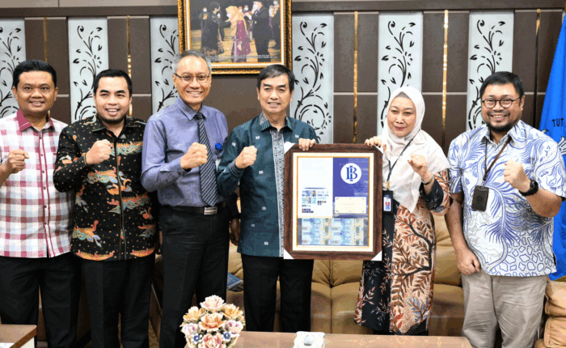
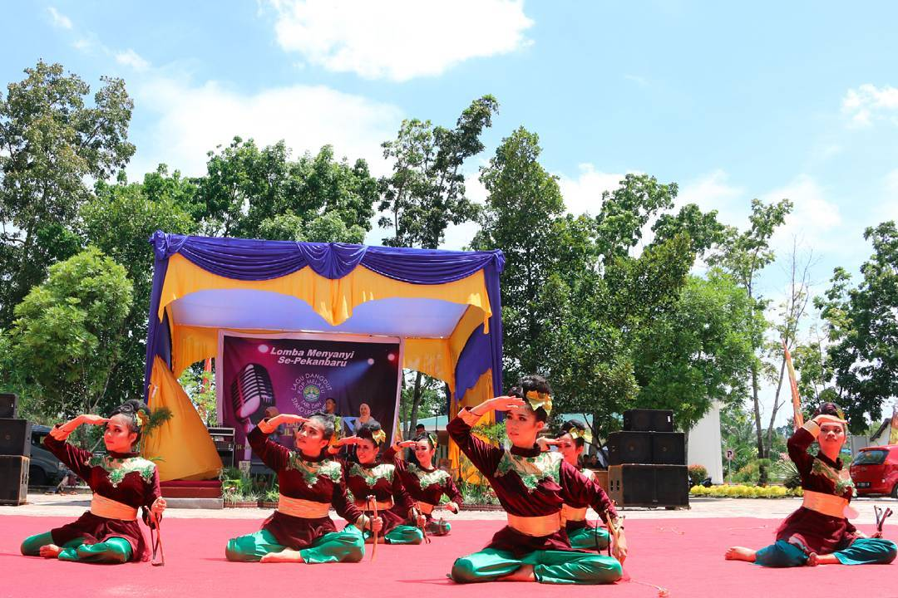
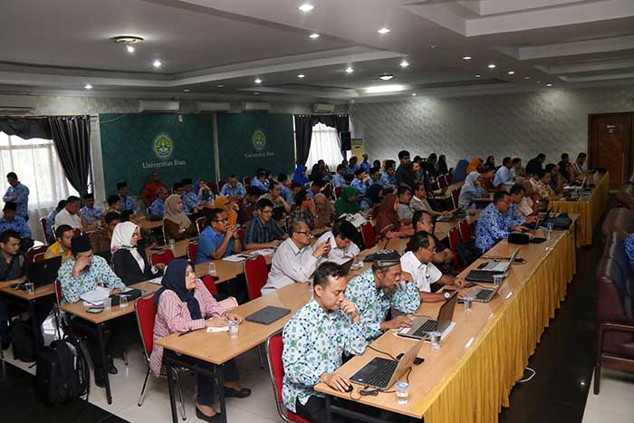

.png)

Sejarah Baru Bagi UNRI, 8 Mahasiswa Lolos Program Bergengsi Indonesian International Student Mobility Awards (IISMA)
MARCH 22, 2024

Berkunjung ke UNRI, BI Riau Sampaikan Beasiswa
MARCH 21, 2024

UNRI Jalin Kerja Sama dengan Kadin Dumai
MARCH 20, 2024

Rektor UNRI Jadi Saksi Pelantikan PJ. Sekda Provinsi Riau
MARCH 19, 2024

Optimalisasi Program Kerja Bidang Akademis dan Kemahasiswaan Untuk Akselerasi Capaian Kinerja Tahun 2025
MARCH 18, 2024

INOVASI TIM PROMEEG UNIVERSITAS RIAU RAIH RUNNER UP CARBON NEUTRAL SOLUTION ANUGRAH INNOVILLAGE 2023
MARCH 18, 2024
GURU BESAR
FAKULTAS
DOSEN
MAHASISWA
PROGRAM STUDI
TENAGA KEPENDIDIKAN
Hasil Evaluasi Daya Tampung Program Studi Yang Terdeteksi Kenaikan Anomali
JANUARY 31, 2024
Pembayaran UKT/SPP Semester Genap tahun Akademik 2024/2024
JANUARY 3, 2024
Pengajuan Revisi UKT Mahasiswa Angkatan 2023 Pemegang KIP Kuliah yang Tidak Termasuk Penerima Beasiswa KIP Kuliah
DECEMBER 28, 2023
Hasil Akhir Seleksi (Kelulusan) PPPK Kebutuhan Tenaga Teknis dan Tenaga Kesehatan Kemdikbudristek TA 2023
DECEMBER 24, 2023
Hasil SKD CPNS Kemdikbudristek TA 2023
NOVEMBER 24, 2023
Pengajuan Revisi UKT Semester Genap Tahun 2023/2024
OCTOBER 12, 2023
Program sarjana bisa diikuti oleh lulusan SMA/SMK/MA/MAK, mempunyai beban studi 144-160 sks dan dapat ditempuh dalam waktu 8-14 semester.
UNRI menawarkan program studi lanjutan di tingkat S2 dan S3 yang diselenggarakan di fakultas serta sekolah Pascasarjana.
Program profesi diperuntukkan sebagai bagi lulusan program studi tertentu sebagai syarat untuk mendapatkan gelar keprofesian.




Kampus Bina Widya KM. 12,5, Simpang Baru, Kec. Tampan, Kota Pekanbaru, Riau 28293
(0761) 63266
rektor@unri.ac.id
Copyright @ Universitas Riau